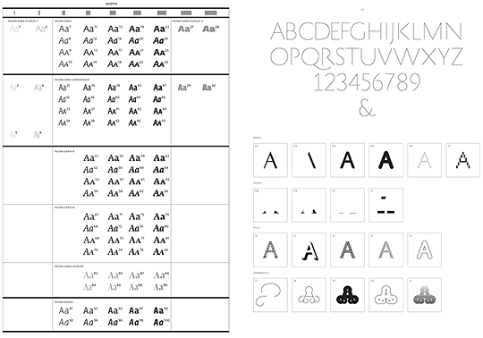
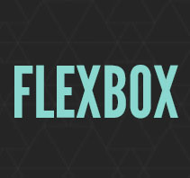
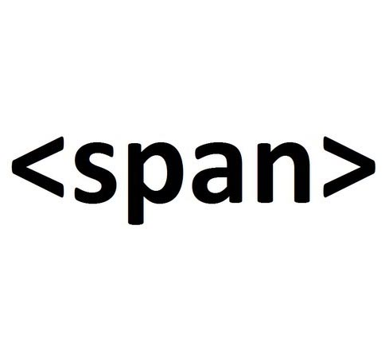
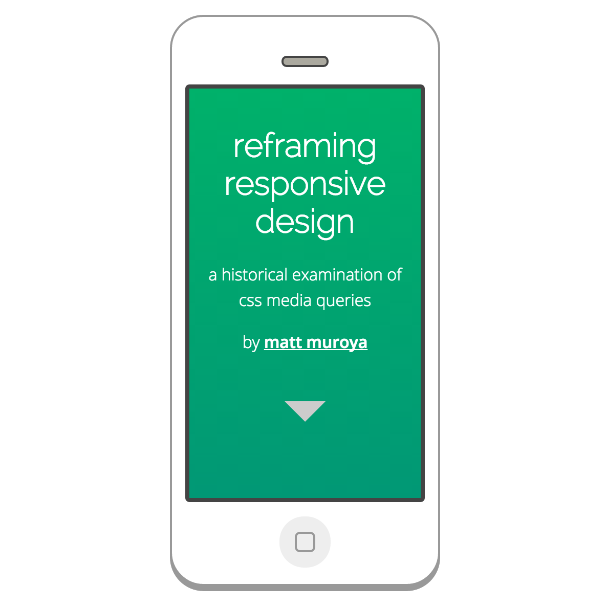
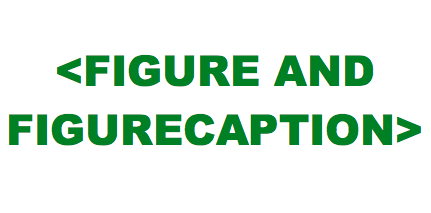
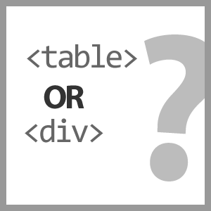

Catalog of student project for WRIT 4662W - Writing with Digital Technologies
« Student Historicizing Projects »
The following is a list of links to student historicizing projects and a short description:
-
 Lucy Bixby, English & Art
Lucy Bixby, English & Art
-

John Buckeye, STC Cert
- Andrew Burke, Technical Writing & Communication, Minor in Information Technology
 Linus Chan, Business Marketing Education
Linus Chan, Business Marketing Education
- Cindy Croy, Technical Communication Graduate Certificate
 Alexandra DePalma, Economics and Art History
Alexandra DePalma, Economics and Art History
-  Anna Irish, English Lit.
-  Jacqui Laliberte, Technical Writing & Communication
 Haiyen Le, Technical Writing & Communication
Haiyen Le, Technical Writing & Communication
-  Matt Muroya, BS Technical Writing and Communication
 Sarah Murto, MS Scientific & Technical Communication
Sarah Murto, MS Scientific & Technical Communication
-  Juliet Nakasi, Technical Writing and Communication, Minor in Computer Science
- Mao Thao, Technical Writing and Communication
-  Zoey Thao, Scientific & Technical Communication